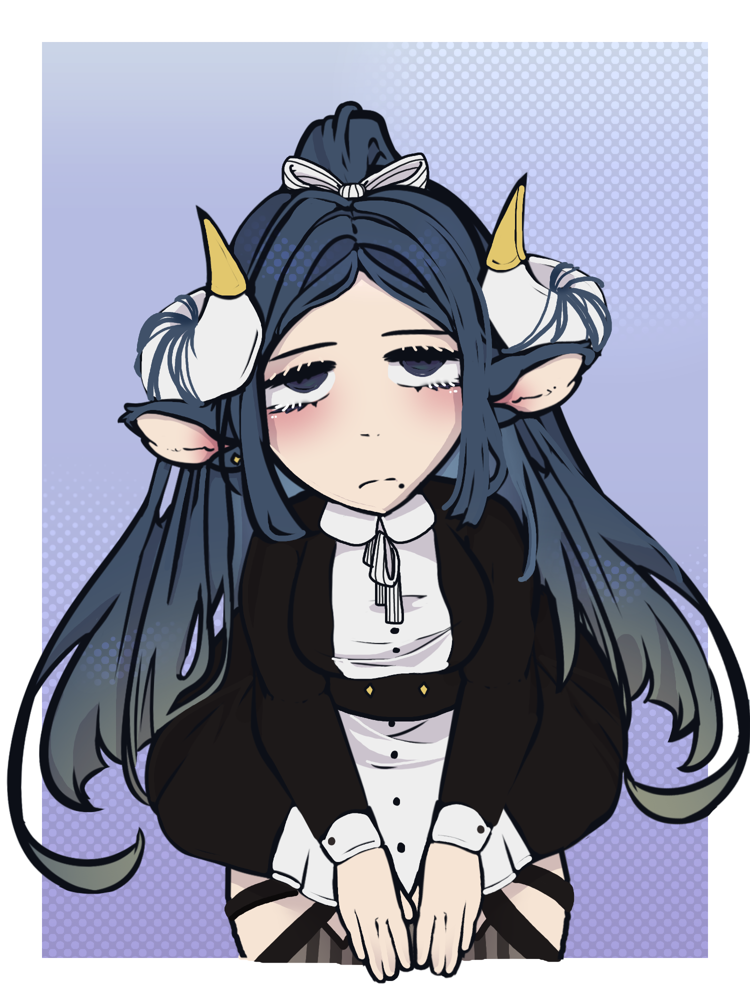

Minerva
congratulations! you were… a cow? a dragon? well, you looked nice at least, and thats what matters most! …hey! that wasnt very nice! watch your tone with me, or i’ll remove you from the face of the earth! minerva was a sweet, but shy maid that had a bit of a sharp tongue. good thing it’s coated in an earl gray tea flavored saliva! she was happy to serve others, with a smile on her face. despite that, she worried that people hated her for who she was. minerva didnt let that get her down, as she was passionate in her work, always making sure to get the job done! She always did her best to make someone’s day! And after a hard days work, she’d rest comfortably at home, relaxing, and crying… a lot.. but, will you bother to remember?